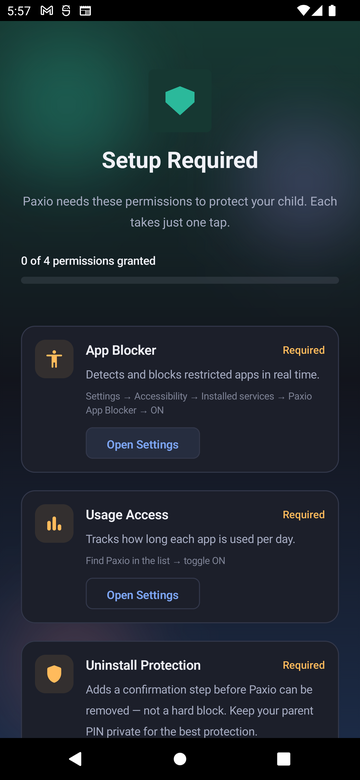
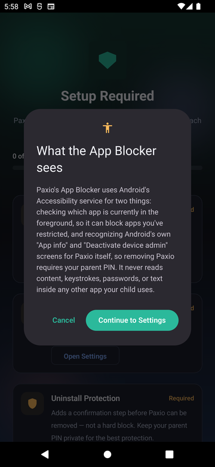
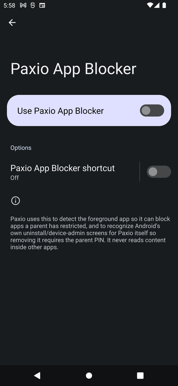
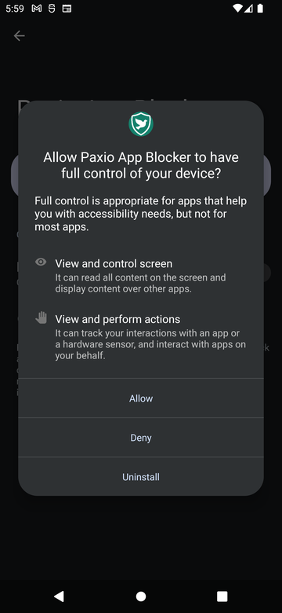

This screen appears on a device set to "This is my child's phone," or a shared
device switched into child view — a "This is my phone" device never sees it, since
permissions are only needed to run enforcement on a child-facing device. Paxio explains what each
one does before asking for it, and each takes just one tap.
What each permission is for
Permission
What it's for
App Blocker (Accessibility Service)
Detects and blocks restricted apps in real time.
Usage Access
Tracks how long each app is used per day.
Uninstall Protection (Device Admin)
Adds a confirmation step before Paxio can be removed — not a hard block. Keep your parent PIN private for the best protection.
Content Filtering (local VPN)
Lets Paxio filter unsafe websites using a local, on-device VPN connection. No browsing data leaves the device.
Notifications
Lets Paxio alert you about screen time limits and app blocks.
All five are required — the "Continue" button stays disabled until every one is granted.
Granting them
A progress line at the top shows "X of Y permissions granted," with a fill bar that updates live.
Tap "Open Settings" on any ungranted card — each one shows the short path to follow (e.g. "Settings → Accessibility → Installed services → Paxio App Blocker → ON").
Return to Paxio after granting — the card turns green with a checkmark automatically, no need to tap anything else.
Tap "Continue" once every card is green.

The permission-setup screen.
What the App Blocker actually sees
Tapping "Open Settings" on the App Blocker card first shows a disclosure dialog, before handing
off to Android's own Accessibility settings:
"Paxio's App Blocker uses Android's Accessibility service for two things: checking which app
is currently in the foreground, so it can block apps you've restricted, and recognizing
Android's own 'App info' and 'Deactivate device admin' screens for Paxio itself, so removing
Paxio requires your parent PIN. It never reads content, keystrokes, passwords, or text inside
any other app your child uses."

The "What the App Blocker sees" disclosure dialog.
Enabling App Blocker
Tapping "Continue to Settings" opens Android's Accessibility settings, with Paxio App Blocker listed and off.
Tap it, then toggle "Use Paxio App Blocker" on.
Tap "Allow" on the system dialog asking to give it full control — needed to detect the foreground app and block it.

Toggle it on.

Confirm the system prompt.
Enabling Usage Access
Tapping "Open Settings" opens Android's "Apps with usage access" list, already scrolled to Paxio.
Toggle "Permit usage access" on, then go back to Paxio.